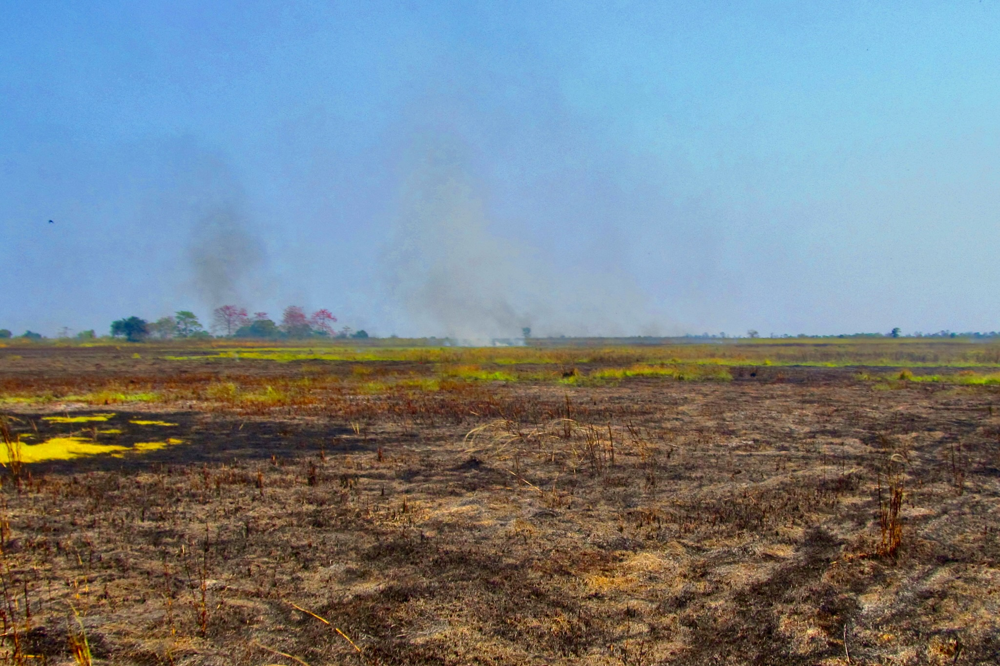
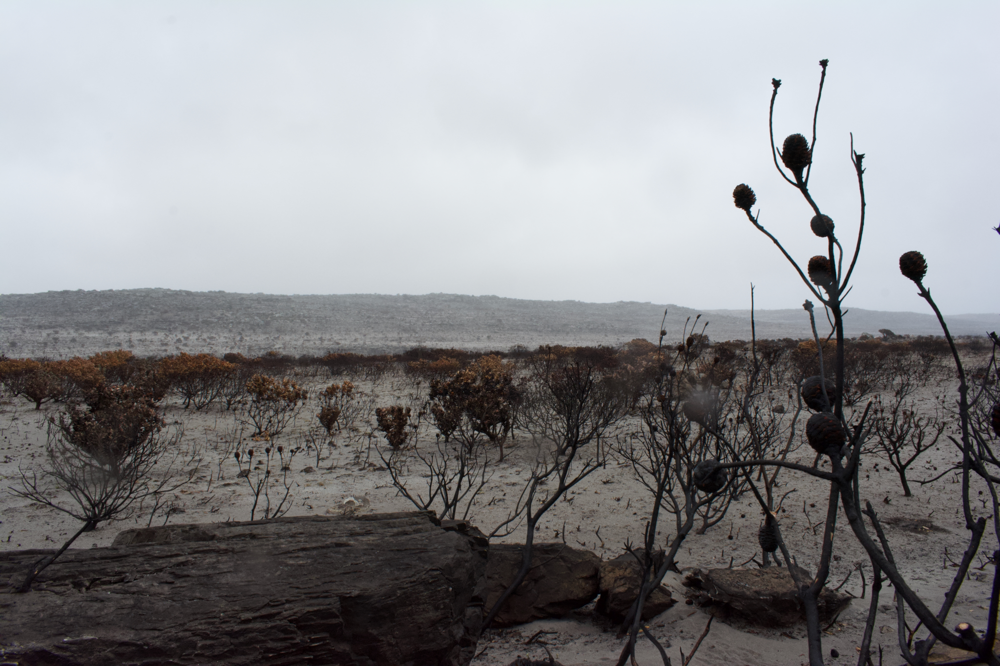
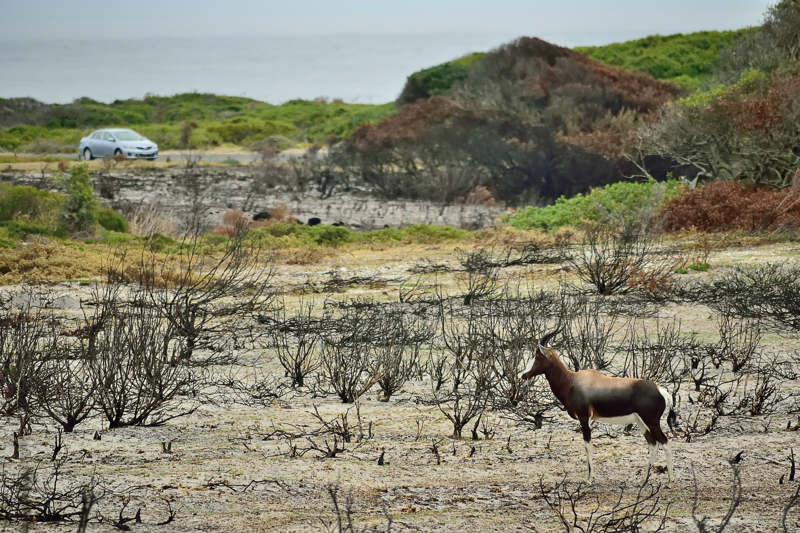
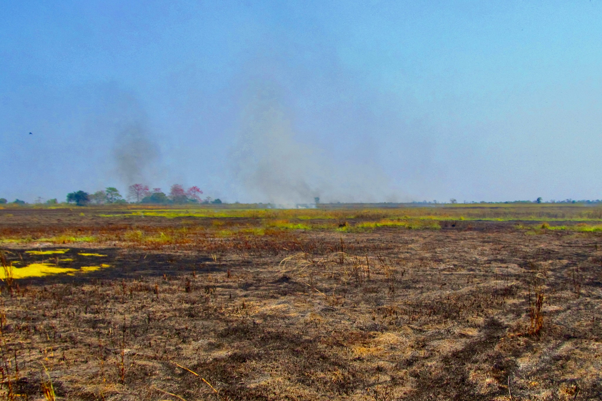
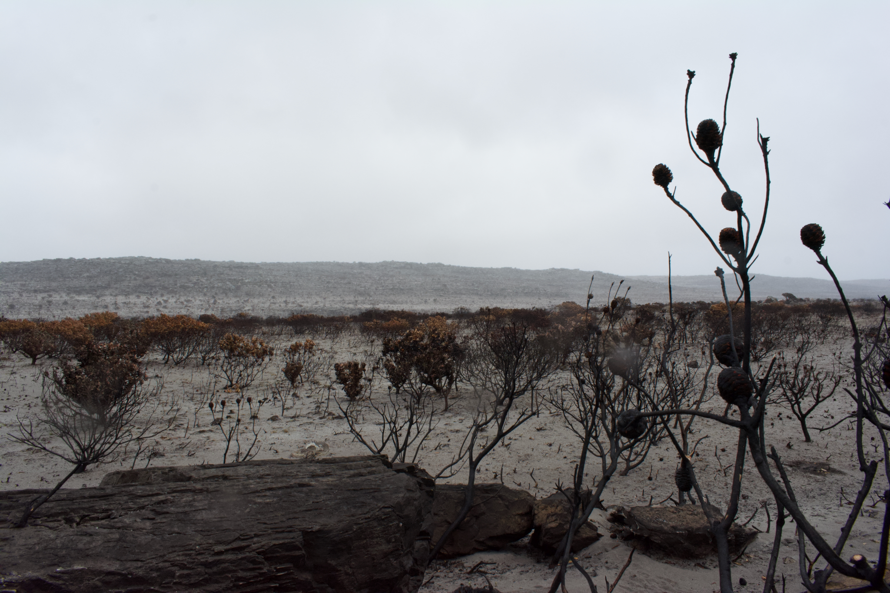
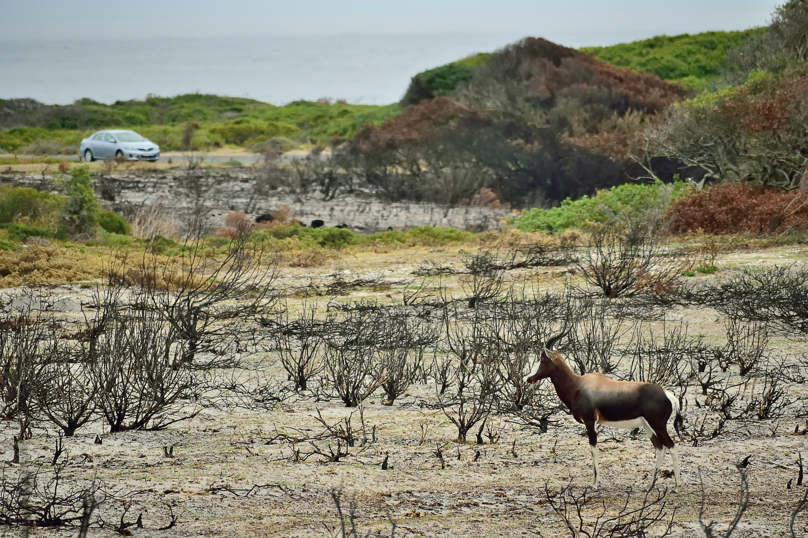

Chapter 2 Effects of wildfires
Wildfires occur in environments with substantial fuel loads, primarily consisting of vegetation and organic matter. These areas often have dense forests and diverse wildlife, both of which are already under considerable stress from a variety of factors, many of which are man-made. In this way, wildfires significantly worsen the ongoing crisis of declining biodiversity by not only killing plants and animals, but also by decimating habitats and ecosystems.
Wildfires also result in considerable destruction to human communities. Besides loss of life and property, they also have long-term deleterious impacts on soil erosion, fertility, availability of fresh water, and tourism avenues. Furthermore, wildfires also emit harmful gases, smoke, and ash, which contribute to the expansion of their detrimental impact on the health of humans, plants, and animals.
Wildfires also have several short, medium, and long-term inimical effects on the society at large, causing disruptions in social life, evacuations, and forced migrations. Through the release of copious amounts of greenhouse gases, soot, and nucleation particles, wildfires are also changing weather and climate patterns over small and large scales.
In this chapter, we will look at these, and many more effects of wildfires in detail.
2.1 Classification of wildfire effects
The effects of wildfires can be systematically categorized into several classifications:
- Spatial and temporal effects: We can examine effects of wildfires in space (spatial dimension), time (temporal dimension), or both at the same time.
- Spatial effects: The impacts of wildfires can be analyzed in terms of their geographical extent and distribution. Some effects are localized to the immediate vicinity of the fire, while others are spread over much larger areas. In this way, spatial effects are divided into proximate, intermediate, and distal effects:
- Proximate effects: These are the direct impacts experienced in the immediate area surrounding the wildfire. The intense heat and flames can cause significant damage to vegetation, soil, and wildlife in this zone. We have seen this proximate area in figure 1.1e–f, where the burnt region is visible.
- Intermediate effects: These occur at a moderate distance from the fire. While the intensity of the impact is less severe compared to the proximate area, effects such as smoke deposition and altered air quality can still be significant.
- Distal effects: These are observed at large distances from the wildfire. The effects in this zone primarily include the dispersal of smoke, ash, and other pollutants, which can affect air and water quality, and weather, over a large area. We have seen this distal area in figure 1.1c–d, where smoke emanating from the Camp wildfire is visible. A similar picture emerges when plotting distribution of various pollutants released during a wildfire, as compared to baseline values in years without comparable wildfires. For example, in figure 2.1, we observe very high concentrations of aerosols at the site of Camp wildfire, and a considerable concentration of aerosols even at locations that are significantly far off from the site of the wildfire, to which these aerosols would have reached through wind movement, diffusion, and other processes. We do not find a similar picture in other baseline years that did not have huge wildfires; though such years do depict some distribution of aerosols due to other reasons. In this context, the concentration of aerosols is measured using the Ultraviolet Aerosol Index (UVAI), a quantitative measure of aerosol concentration in the atmosphere, derived from the difference in ultraviolet radiation intensity under aerosol-laden conditions compared to clear sky conditions. The formula for calculating UVAI is: \(UVAI = \frac{(I_{UV} - I_{UV, \text{clear}})}{I_{UV, \text{clear}}}\), where \(I_{UV}\) represents the measured ultraviolet radiation intensity at a specific wavelength in the presence of aerosols, while \(I_{UV, \text{clear}}\) denotes the expected intensity of UV radiation in a clear atmosphere devoid of aerosols. The resulting UVAI provides insight into the concentration of aerosols, with higher UVAI values indicating a greater abundance of aerosols. This facilitates the assessment of aerosol impacts on atmospheric conditions, weather, and climate.
- Spatial effects: The impacts of wildfires can be analyzed in terms of their geographical extent and distribution. Some effects are localized to the immediate vicinity of the fire, while others are spread over much larger areas. In this way, spatial effects are divided into proximate, intermediate, and distal effects:


Figure 2.1: Distribution of aerosols around Camp wildfire as discerned through Sentinel-5P UV aerosol index. Data courtesy European Space Agency, Open Street Map, and Open Topo Map. Visualized on geemap using Google Earth Engine.
- Temporal effects: The consequences of wildfires can also be assessed over time, considering both the immediate aftermath and the longer-term changes that result from the fire. Temporal effects are classified into short-term, medium-term, and long-term effects:
- Short-term effects: These refer to the immediate impacts of wildfires, such as the destruction of vegetation and the disruption of local ecosystems. For instance, grasses may be destroyed, but they can often regenerate relatively quickly with subsequent rainfall.
- Medium-term effects: These include the changes that occur over a period of months to years following the wildfire. This may involve shifts in species composition, changes in soil properties, and the gradual recovery of vegetation.
- Long-term effects: These are the enduring consequences that can persist for decades or even longer, as seen in figure 2.2 (NASA 2019). Such effects include the prolonged loss of biodiversity, alterations in ecosystem structure and function, and the potential for permanent extinction of species.
Figure 2.2: Long-term effects of the 1988 Yellowstone National Park wildfire. Images courtesy NASA’s Scientific Visualization Studio.
Combination of spatial and temporal effects: Each combination provides insights into how the impacts of wildfires can vary in both space and time. The following classifications illustrate these potential combinations:
Proximate and short-term: This combination refers to the immediate and often severe impacts experienced in the area closest to the wildfire. For example, intense heat and flames can cause immediate destruction of vegetation and habitat, with effects that are observed shortly after the fire.
Proximate and medium-term: This involves impacts that occur in the immediate vicinity of the wildfire but are observed over a medium duration. These effects include soil degradation, changes in local species composition, and gradual shifts in the ecosystem as the area begins to recover.
Proximate and long-term: These are the enduring impacts on the area directly affected by the wildfire. They include long-lasting changes such as persistent alterations in soil chemistry, prolonged loss of biodiversity, and long-term disruption of ecological processes.
Intermediate and short-term: This combination captures the effects experienced at a moderate distance from the fire in the short term. These impacts may include smoke and ash deposition, as well as changes in air quality and immediate disruptions to nearby ecosystems.
Intermediate and medium-term: These effects are observed at a moderate distance from the wildfire over a medium duration. They may involve changes in vegetation patterns, gradual recovery of local ecosystems, and longer-term alterations in air quality.
Intermediate and long-term: This refers to the sustained impacts at a moderate distance from the wildfire. Long-term effects may include prolonged changes in air and water quality, persistent shifts in vegetation and wildlife populations, and ongoing recovery challenges for ecosystems.
Distal and short-term: This combination describes the effects experienced far from the wildfire but observed in the short term. These impacts often include the spread of smoke and pollutants, which can affect air quality and public health in distant areas.
Distal and medium-term: These effects occur at greater distances from the wildfire over a medium duration. They may include continued dispersion of smoke and ash, as well as medium-term changes in atmospheric conditions and impacts on distant ecosystems.
Distal and long-term: This combination involves the long-term impacts observed far from the fire. Persistent issues may include long-lasting effects on air quality, potential alterations in regional climate patterns, and ecological changes in areas far from the original wildfire.
By understanding these various combinations of spatial and temporal effects, researchers and policymakers can better assess the multifaceted impacts of wildfires. This comprehensive approach aids in the development of targeted strategies for managing and mitigating the diverse consequences of wildfires on both local and broader scales.
Effects on different subject areas: We can also analyze the effects of wildfires through various subject areas, each of which highlights different aspects of their impact. These categories include:
Physical effects: This encompasses the direct physical alterations caused by wildfires, such as changes to the landscape, soil erosion, and the destruction of physical infrastructure, mainly due to the intense heat and burning.
Chemical effects: Wildfires have significant chemical impacts, including the release of various pollutants into the atmosphere. These pollutants can include carbon monoxide, carbon dioxide, and volatile organic compounds. The combustion process also affects soil chemistry, altering nutrient availability and potentially contaminating water sources.
Biological effects: This category covers the impacts on living organisms and ecosystems. It includes the immediate harm to flora and fauna, changes in species composition, and disruptions to ecological interactions. It also involves the longer-term effects on biodiversity, habitat destruction, and the potential for species migration or extinction.
Effects on society: Wildfires have profound effects on human communities, including damage to property, loss of livelihoods, and threats to public health. They can lead to displacement of communities, economic losses, and strain on emergency services. The societal impacts also include the psychological stress experienced by affected individuals and communities.
Effects on weather and climate: Wildfires can influence local and global weather patterns and climate. The release of particulate matter and greenhouse gases can affect weather and climate, both near and far. Wildfires can also alter local weather patterns, such as increasing temperatures and altering precipitation patterns, which can have cascading effects on regional climates.
The following sections will provide a detailed examination of these effects, offering insights into the complex ways in which wildfires impact various aspects of the environment and human society.
2.2 Physical effects
Wildfires induce a variety of changes that do not necessarily involve chemical transformations. These changes are classified as physical effects and include alterations in temperature, soil structure, sediment movement through erosion, and hydrology. This section provides an in-depth analysis of these physical effects.
2.2.1 Changes in temperature
Combustion, the process of burning, is a chemical reaction that is typically exothermic, meaning that it releases energy. During a wildfire, the combustion of fuel releases energy predominantly in the form of heat and light. This results in a significant increase in temperature that is both observable and measurable.
Wildfires can achieve temperatures ranging from approximately 1,000 to 1,500 Kelvin (K). However, under extreme conditions, such as during intense wildfires, temperatures can rise to as high as 2,500 K (Dennison et al. 2006). These high temperatures can have profound impacts on the environment, including the decimation and alteration of vegetation, soil properties, and even the underlying geological structure. The heat from wildfires can cause immediate and severe changes, such as the vaporization of moisture in plants and soil, the charring of organic matter, and potential damage to infrastructure.
A significant amount of energy released by wildfires is dissipated through the processes of conduction, convection, and radiation. As a result, temperature changes can be observed at various scales — proximate, intermediate, and distal.
Temperature effects from wildfires can also be categorized into short-term, medium-term, and long-term temporal changes. As a wildfire approaches a place, the temperature rapidly escalates as more and more radiant energy starts to reach it. Once the spot starts to burn, a massive amount of energy gets released through the process of combustion. The surrounding materials start to gather and absorb this energy into their masses. After their heat capacity is reached, the temperature shoots to a maximum. Once the fuel load is depleted, and the wildfire has moved on, the temperature begins to decrease.
However, it may take several hours or even days — or years — for temperatures to return to pre-wildfire conditions, especially because the heat stored in the soil dissipates very slowly. Streams in burnt areas often exhibit elevated temperatures for several years following a large wildfire (Rhoades, Entwistle, and Butler 2011). This prolonged warming is generally accentuated by the loss of vegetation cover, which reduces shade and allows more sunlight to be absorbed, and also by the darkening of surfaces due to charring and smoke, which increases their capacity to absorb incident radiation. This elevated temperature in streams can be noticeable even at considerable distances from the wildfire, indicating distal and long-term effects. Observations have shown that the daily thermal maxima of streams in burnt areas can exceed those in unburnt areas, even when the minima are similar (Hitt 2003).
Paradoxically, wildfires can also result in localized cooling effects (David, Asarian, and Lake 2018). This cooling occurs through the attenuation of solar radiation by smoke (David, Asarian, and Lake 2018; Huang et al. 2023; Kochanski et al. 2019; Stone et al. 2011). The dense smoke can act as a barrier, blocking sunlight and infrared radiation from reaching the ground. Additionally, in intermediate and distal areas, cooling can occur due to the creation of convection currents that draw in cooler air from surrounding regions (Rosenfeld et al. 2007; Tedim et al. 2018; Y. Zhang et al. 2019). Darkened surfaces resulting from charring can also enhance radiative cooling (Huang et al. 2023; C.-C. Liu et al. 2022; Stone et al. 2011), leading to lower thermal minima, particularly during nighttime (Huang et al. 2023).
Understanding these temperature changes is crucial for assessing the broader physical impacts of wildfires, including their effects on soil stability, water retention, and overall landscape morphology.
2.2.2 Changes in soil
Wildfires can significantly impact soils in both short and long terms.
Short-term effects: During and after a wildfire, the soil undergoes several physical and chemical changes. The intense heat from the fire can alter the physicochemical properties of the soil and its constituents. This includes changes in soil texture5, structure6, and chemical composition. Extreme temperatures can cause soil particles to fuse together, a process known as soil “baking,” which can lead to the formation of a hardened layer on the soil surface. This layer can affect water infiltration and seed germination.
Medium- to long-term effects: Over time, wildfires can disrupt the environmental processes that influence soil properties. These include changes in the input, storage, and decomposition of both organic and inorganic soil constituents (Pellegrini et al. 2022). For example, the loss of vegetation cover following a wildfire reduces the amount of organic material added to the soil. This can lead to a decrease in soil fertility and changes in humus content and nutrient cycling. Additionally, the altered soil structure can affect water retention and erosion rates.
Soil is generally a poor conductor of heat, which means that the high temperatures generated by wildfires typically do not penetrate deeply into the soil (Ice, Neary, and Adams 2004). As a result, while the surface layers of soil can experience intense heating, deeper soil layers remain relatively unaffected. However, the intense baking of the surface soil can lead to several notable changes. The surface layer may become more resistant to erosion but also less permeable to water, which can exacerbate runoff and ultimately contribute to increased erosion in the post-fire environment.
A prominent change that occurs in the soil as a result of wildfires is the alteration of its structure (Chief, Young, and Shafer 2012; Šimanskỳ 2015). This refers to the way that individual particles of sand, silt, and clay are organized and assembled within the soil matrix. The combustion of organic matter during a wildfire leads to a significant reduction in the total organic content of the soil (Certini et al. 2011; Fernández, Cabaneiro, and Carballas 1997).
The process of burning converts organic matter into what is known as pyromorphic7 humus. This form of humus has notably weaker colloidal properties compared to pre-fire organic matter (González-Pérez et al. 2004). Fires also cause a sharp decrease in the concentration of lignin, a complex organic polymer, while increasing the levels of unspecific aromatics and polycyclic aromatic hydrocarbons (Jiménez-Morillo et al. 2020; Merino et al. 2018). These compounds affect soil health and its capacity to support plant growth.
In addition, the mineralized charred remains, often referred to as biochar, become incorporated into the soil (Fernández, Cabaneiro, and Carballas 1997; Knicker 2007). Biochar can influence soil properties by altering its structure, enhancing water retention, and potentially ameliorating soil fertility.
Wildfires have a profound impact on soil microorganisms and other living organisms in the upper layers of soil (Borgogni et al. 2019; Köster et al. 2021). These effects include both the immediate loss of these organisms and changes in their populations following the fire (Acea and Carballas 1996; Ginzburg and Steinberger 2012; Rodrı́guez et al. 2017). Consequently, these changes can be observed in the short term, as well as medium and longer terms.
The death of microorganisms and other soil organisms reduces the decomposition rate of soil organic matter (Visser and Parkinson 1999). Thus, any organic matter in the soil may persist for extended periods (Holden, Gutierrez, and Treseder 2013). This persistence can further alter soil nutrient dynamics and affect ecosystem recovery.
Additionally, wildfires significantly decrease the amount of plant matter available in the area (Bartels et al. 2016; Cuevas-Gonzalez et al. 2009). Fire destroys plants, seeds, and root systems through intense heat and also creates an environment that is less conducive to plant growth. Reduction in plant matter leads to a decreased influx of organic material into the soil.
As a result of these processes, the net quantity of organic matter in the soil can vary. It may increase, decrease, or remain constant over time, depending on several factors (Kelly et al. 2021; Pellegrini et al. 2022). The final outcome is influenced by the initial soil conditions, including its structure and the availability of water, which play crucial roles in determining how the soil recovers and how organic matter dynamics evolve after the fire episode (Aedo and Bonilla 2021).
Understanding these effects is essential for managing soil health and promoting effective ecosystem restoration following wildfires.
2.2.3 Changes in hydrology
The intense heat generated by wildfires can lead to the formation of highly hydrophobic, non-wettable soil (J. Chen et al. 2020; Debano and Krammes 1966; Varela, Benito, and De Blas 2005; Woods, Birkas, and Ahl 2007). This increase in hydrophobicity significantly reduces the soil’s ability to absorb water (Jiménez-Morillo et al. 2017), resulting in complex changes to the hydrology of the affected region (Doerr et al. 2006). These changes include increased surface runoff, elevated flood risks (Moody et al. 2008; Prosser and Williams 1998), and alterations to geomorphology (Moody and Martin 2001; Shakesby and Doerr 2006), erosion patterns (Huffman, MacDonald, and Stednick 2001; Shakesby 2011), and ecological dynamics (Kinnaird and O’Brien 1998).
Wildfires typically reduce soil water retention capabilities (Ebel 2012) due to structural changes and increased hydrophobicity. Reduction in water absorption decreases the moisture available to plants, adversely affecting their growth and having long-term implications for future wildfire occurrences (Hou, Orth, et al. 2020; D. Jensen et al. 2018; Krueger et al. 2022).
Moreover, changes in soil properties and increased runoff lead to the mobilization of large quantities of solutes and sediments into nearby water bodies and reservoirs (Moody and Martin 2004; Warrick and Rubin 2007). The deposition of these sediments can alter hydrological connectivity (Ortı́z-Rodrı́guez, Muñoz-Robles, and Borselli 2019; J. Wu, Baartman, and Nunes 2021) and disrupt streamflow patterns (Gao et al. 2012; Guo et al. 2023; Khaledi et al. 2022), as large sediment loads can obstruct stream channels. Additionally, sediments can affect groundwater recharge rates by clogging soil pores (Rey et al. 2023) and reduce water storage capacity of watersheds (Hallema, Robinne, and Bladon 2018; Nyman et al. 2014). This occurs as sediments fill low-lying areas and impede aquifer recharge.
These changes collectively contribute to a reduction in water quality and availability in immediate as well as distant areas surrounding the wildfire (Emmerton et al. 2020; Rhoades et al. 2019; Smith et al. 2011). Understanding these hydrological impacts is crucial for managing water resources and mitigating the broader ecological consequences of wildfires.
2.3 Chemical effects
In addition to physical changes, wildfires cause significant chemical alterations in the environment. These changes can degrade air and water quality and have far-reaching effects, extending well beyond the immediate area of the fire.
2.3.1 Release of hazardous substances
Wildfires involve the combustion of biological materials rich in carbon, hydrogen, oxygen, nitrogen, sulfur, and phosphorus. The intense heat causes these materials to undergo chemical transformations, releasing a variety of hazardous substances:
- Carbon compounds: A major component of wildfire emissions is carbon dioxide (CO₂), carbon monoxide (CO), and methane (CH₄). Carbon dioxide is a prominent greenhouse gas that contributes to global warming. Excess CO₂ can also reduce oxygen levels, posing risks to respiratory health. Carbon monoxide, which binds more effectively to hemoglobin than oxygen, forms carboxyhemoglobin, reducing blood’s oxygen-carrying capacity. This makes carbon monoxide an extremely toxic gas. Distribution of atmospheric carbon monoxide during Camp wildfire, together with baseline data is shown in figure 2.3a–b8. We can observe a distinct increase in atmospheric carbon monoxide concentration at the time of the Camp wildfire. Methane, another potent greenhouse gas, has a global warming potential 84 times greater than carbon dioxide over 20 years and 28 times greater over 100 years (Skytt, Nielsen, and Jonsson 2020). Methane is also flammable and can displace oxygen, leading to asphyxiation (R. Byard 2011; R. W. Byard 2023; McEwen 2018; Sauvageau and Boghossian 2010).


Figure 2.3: Distribution of some carbon compounds around Camp wildfire as discerned through Sentinel-5P satellite. Data courtesy European Space Agency, Open Street Map, and Open Topo Map. Visualized on geemap using Google Earth Engine.
Pyrogenic hydrocarbons and Non-Methane Organic Compounds (NMOCs): Wildfires release various pyrogenic9 hydrocarbons and NMOCs, including methanol, formaldehyde, acetaldehyde, acetone, hydroxyacetone, acetic acid, furan, butanedione, alkanes, alkenes, alkynes, and volatile organic compounds (VOCs) such as benzene, toluene, ethylbenzene, and xylene (Y. Liu, Goodrick, and Heilman 2014; X. Liu et al. 2017; S. P. Urbanski, Hao, and Baker 2008; S. Urbanski 2014). Many of these substances are toxic, carcinogenic (cancer-causing), and teratogenic10, potentially causing deaths, cancers, and developmental disorders. They can be absorbed through respiration, contact, and ingestion, and are often bioaccumulated11 in the bodies of organisms. Distribution of atmospheric formaldehyde during Camp wildfire, together with baseline data, are shown in figure 2.3c–d12. We can observe a distinct increase in the concentration of atmospheric formaldehyde at the time of Camp wildfire, much above the general level present due to other sources of pollution.
Halogen-containing chemicals: Wildfires produce halogenated compounds such as hydrochloric acid, methyl chloride, methyl bromide, methyl iodide, polychlorinated dibenzo-p-dioxins, polychlorinated dibenzofurans, and polychlorinated biphenyls (S. P. Urbanski, Hao, and Baker 2008; Young, Balluz, and Malilay 2004; M. Zhang, Buekens, and Li 2017). These compounds are respiratory and skin irritants, and many are known carcinogens and teratogens. Dioxins, in particular, are persistent organic pollutants (POPs) that are very slow to degrade and have long-term toxic effects on reproductive, developmental, immune, and endocrine systems.
Nitrogen compounds: Wildfires release nitrogen compounds, including nitrogen oxides (NOx), nitrous acid, ammonia (NH3), acetonitrile (CH3CN), cyanohydrins, hydrogen cyanide (HCN), cyanogen ((CN)2), and other cyanides from plants containing cyanogenic glycosides (Andreae and Merlet 2001; Andreae 2019; Flematti et al. 2011; S. P. Urbanski, Hao, and Baker 2008). Nitrogen oxides contribute to photochemical smog, acid rain, and tropospheric ozone formation (Dickerson et al. 1997; Pitts Jr and Finlayson 1975). These compounds convert into secondary pollutants13 such as nitrous and nitric acids, dinitrogen pentoxide, peroxyacetyl nitrate (PAN), and peroxynitric acid, which are respiratory and eye irritants (Harrison 1986; Sillman 2003). Acidic compounds in rainfall can damage trees, disrupt ecosystems, and alter biogeochemical cycles (Gorham 1976; Irwin and Williams 1988; D. W. Johnson, Turner, and Kelly 1982; Likens, Driscoll, and Buso 1996). Cyanides, including hydrogen cyanide, are highly toxic and can inhibit cytochrome c oxidase, disrupting cellular respiration (Antonini et al. 1971; Leavesley et al. 2008). Compounds like acetonitrile can be metabolized into hydrogen cyanide within organisms, further exacerbating toxicity (Freeman and Hayes 1987; Organization et al. 1993). Distribution of atmospheric nitrogen dioxide during Camp wildfire, together with baseline data, is shown in figure 2.414. We can observe a distinct increase in atmospheric nitrogen dioxide concentration at the time of Camp wildfire. This is in addition to nitrogen dioxide present due to various human activities15. Urban environments typically exhibit elevated concentrations of NO2, attributable to the high density of vehicular traffic and industrial operations. In the figure, we observe a new spot of nitrogen dioxide concentration near the site of Camp wildfire, that is not present in the baseline data.


Figure 2.4: Distribution of atmospheric nitrogen dioxide around Camp wildfire as discerned through Sentinel-5P satellite. Data courtesy European Space Agency and Open Street Map. Visualized on geemap using Google Earth Engine.
Sulfur compounds: Sulfur-containing compounds released during wildfires include hydrogen sulfide, sulfur oxides (SOx), carbonyl sulfide, dimethyl sulfide, and various sulfates (Flematti et al. 2011; Y. Liu, Goodrick, and Heilman 2014; X. Liu et al. 2017; S. P. Urbanski, Hao, and Baker 2008; S. Urbanski 2014). Hydrogen sulfide is a corrosive, flammable, explosive, and poisonous gas with toxicity comparable to carbon monoxide (Rubright, Pearce, and Peterson 2017). Sulfur oxides react with water vapor to form sulfurous and sulfuric acids, leading to acid rain (Irwin and Williams 1988). Carbonyl sulfide is an irritant and can cause respiratory paralysis in high concentrations (Bartholomaeus and Haritos 2005; Peyton et al. 1978), while dimethyl sulfide is highly flammable and an irritant to the eyes and skin (Authority 2020). Sulfates contribute to PM2.5 particulate matter, impacting air quality and respiratory health (Schlesinger 2007).
Inorganic particulate matter: Inorganic emissions from wildfires include particulate matter and ash containing calcium, magnesium, potassium, silicon, phosphorus, sodium, sulfur, aluminum, iron, manganese, and zinc. At temperatures around 500°C, silica and carbonate compounds, such as calcium carbonate, magnesium carbonate, and potassium carbonate, are prevalent in ash. Above 500°C, these carbonates decompose into oxides (Bodı́ et al. 2014). These inorganic compounds alter the chemical properties of soil and water, affecting pH, disrupting ecosystems, and interfering with nutrient cycles (Grantz, Garner, and Johnson 2003; Rai 2016). Particulates can also lead to health issues like asthma, lung cancer, silicosis, developmental disorders, neurodegenerative disorders, and premature death (Schlesinger 2007).
Other hazardous substances: Plants can accumulate hazardous substances, including heavy metals (e.g., mercury, nickel, cadmium, arsenic, lead, and chromium), pesticides, herbicides, and polychlorinated biphenyls (PCBs) in their bodies (Ali, Khan, and Sajad 2013; Jabeen, Ahmad, and Iqbal 2009; Muthusaravanan et al. 2018). When these plants burn, these hazardous substances are released back into the environment. Radionuclides16 can also be released. For instance, during the 2020 wildfires in the Chernobyl Exclusion Zone, significant amounts of radionuclides were emitted: approximately 341 GBq17 of cesium-137 (137Cs), 51 GBq of strontium-90 (90Sr), 2 GBq of plutonium-238 (238Pu), 33 MBq18 of plutonium-239 (239Pu), 66 MBq of plutonium-240 (240Pu), and 504 MBq of americium-241 (241Am) (Evangeliou and Eckhardt 2020; Igarashi et al. 2020; Masson et al. 2021). In a similar way, cesium-137 deposited in Sweden’s forests following the Chernobyl accident was also released through wildfires (Martinsson et al. 2021). These radionuclides are particularly harmful to developing animals and humans, increasing the risk of cancer, immune deficiency, and radiation sickness (Kamiya et al. 2015; Lindell 1987).
2.3.2 Degradation of air and water quality
Wildfires significantly impair air and water quality through the emission of various pollutants. Among the byproducts of combustion are volatile organic compounds (VOCs) such as benzene, formaldehyde, and acetaldehyde, which are classified as hazardous air pollutants (HAPs). These HAPs are associated with numerous health issues, including asthma, cancer, and chronic obstructive pulmonary disease (COPD) (Choi et al. 2018; Leikauf 2002; Loh et al. 2007). The presence of these pollutants, along with aerosols and particulates, diminishes air and water quality, contributing to degradation of various habitats (Mehaffey et al. 2009; Zvereva and Kozlov 2010).
Following wildfires, stream temperatures often rise significantly (Rhoades, Entwistle, and Butler 2011), which can profoundly affect various water characteristics. Increased temperatures influence the solubility of salts — making most salts more soluble in water, and decreasing the dissolution of oxygen and other gases in the water. These changes can lead to chemical toxicity in aquatic environments (Hitt 2003), irrespective of whether or not the increase in temperature, by itself, exceeds the temperature tolerance limits of different species (Isaak et al. 2010; Meador and Carlisle 2007).
The degradation of water quality is also compounded by the influx of ash, sediments, and nutrients from wildfires (Smith et al. 2011). This additional load further disrupts the aquatic ecosystem by altering the chemical composition of water, affecting both its physical properties and its capacity to support diverse forms of life. Consequently, the combined effects of elevated temperatures and wildfire-induced contaminants contribute to significant declines in water quality and ecosystem health.
The degradation of air and water quality is further exacerbated by the generation of new and potentially hazardous compounds. Wildfires significantly alter atmospheric chemistry by releasing a variety of reactive substances. These include free radicals (Leonard et al. 2007; Sigmund et al. 2021), reactive nitrogen species (Benedict et al. 2017; Lindaas et al. 2021), hydroxyl radicals (OH) (Fang et al. 2023), ozone (Jaffe and Wigder 2012), and reactive oxygen species (Fang et al. 2023). These reactive compounds contribute to the formation of secondary pollutants and influence atmospheric reactivity.
The transformation of organic chemicals during wildfires also produces several new compounds. These include secondary organic aerosols19 (SOAs) (Liang et al. 2022; Tomaz et al. 2018), which can affect air quality and climate. Additionally, compounds such as peroxyacetyl nitrate (PAN) (Peng et al. 2021), polycyclic aromatic hydrocarbons (PAHs) (Kieta et al. 2022), dioxins (Ward and Lincoln 2006), furans (Newland et al. 2022), and other persistent organic pollutants (POPs) (Gong and Wang 2021) are also released. These pollutants are known for their environmental persistence and potential to cause long-term harm to ecosystems and human health (Alharbi et al. 2018; Qing Li et al. 2006).
2.4 Biological effects
Wildfires significantly impact ecosystems and biological communities. They can destroy habitats, leading to immediate loss of biodiversity and disruption of food webs. Many species, particularly those that are non-adapted to fire, suffer from population declines or displacement. On the other hand, wildfires can also play a crucial role in certain ecosystems by promoting the regeneration of fire-adapted plants, clearing dead material, and returning nutrients to the soil. This cyclical process can enhance biodiversity in the long term, as new growth attracts a variety of species. However, the increasing frequency and intensity of wildfires, often exacerbated by climate change and human activity, are pushing biological communities to changes at a pace much faster than their pace of adaptation. This poses serious challenges to ecosystem resilience and biodiversity conservation.
2.4.1 Changes in habitat
Wildfires induce profound alterations in habitats across various scales, impacting terrestrial, aquatic, and aerial environments. The immediate and long-term effects on these habitats can be significant and multifaceted.
Wildfires lead to the degradation and destruction of terrestrial habitats as trees and plants are consumed by flames (Bosso et al. 2018; McGarigal, Cushman, and Regan 2005). This destruction reduces the availability of critical resources such as food (Apfelbaum and Haney 1981; Nkwabi et al. 2011), shelter, and nesting sites for wildlife (Brooker and Rowley 1991; Peterson, Dodson, and Harrod 2023; Stillman et al. 2019), as depicted in figure 2.5. The loss of vegetation can destabilize soil, increase erosion, and contribute to the loss of habitat complexity, so crucial for supporting diverse species.
 

Figure 2.5: Some effects of wildfires on wildlife habitats.
Wildfires also adversely affect aquatic habitats through several mechanisms. Elevated temperatures from wildfires can raise water temperatures, negatively impacting aquatic organisms (Schindler 2017). Additionally, hazardous chemicals from wildfires can be transported into water bodies, further compromising water quality (Scordo et al. 2021). Runoff from burned areas can introduce excessive nutrients into aquatic systems, potentially leading to chemical toxicity and eutrophication (Vashukevich et al. 2023). This process promotes the rapid growth of aquatic plants, which can obstruct animal movement and deplete oxygen levels as plant biomass decomposes. The resulting anoxic conditions can lead to widespread fish kills and disrupt aquatic ecosystems.
The impact on aerial habitats is also significant. Smoke, heat, and airborne chemicals from wildfires can impair the health of birds and other aerial species (Stuart-Smith, Adams, and Larsen 2002). Smoke can reduce air quality and visibility, affecting foraging and migratory behavior of organisms. High temperatures and presence of toxic substances in the atmosphere can also lead to respiratory issues and other health problems in birds.
Wildfires profoundly disrupt soil microbial communities and cause widespread destruction that alters the nutrient cycling dynamics within an ecosystem (Eckdahl, Kristensen, and Metcalfe 2023; Elliott et al. 2013). The intense heat and combustion associated with wildfires can kill beneficial microorganisms crucial for decomposing organic matter and recycling nutrients. This disruption can lead to changes in the availability of nutrients, affecting plant growth and overall ecosystem productivity.
In addition to disrupting nutrient cycling, wildfires can also modify the microclimate20 of the affected area (Brown, Mali, and Forstner 2014; Wolf et al. 2021). Loss of vegetation and changes in soil properties can alter temperature and moisture levels, further influencing the local climate and affecting the survival of plant and animal species. Such changes can have cascading effects on the ecosystem, influencing everything from species composition to habitat structure (Awadhiya 2021).
Long-term impacts of these disruptions can lead to significant habitat changes and may even reset the process of ecological succession (Dawe et al. 2021). Ecological succession refers to the gradual process of change and development in an ecosystem following a disturbance. Wildfires, especially when they occur frequently, can reset this process, leading to the formation of a new, often less diverse community known as a disclimax community (Awadhiya 2021), which is characterized by reduced heterogeneity and decreased biological diversity compared to pre-fire conditions (L. Zhang et al. 2021; Pastro, Dickman, and Letnic 2011). This shift can alter the structure and function of the ecosystem, leading to long-term changes in habitat quality and the ability of the area to support a diverse range of species.
Wildfires also have significant impacts on soil seed banks and wildlife, leading to profound ecological changes. Many soil seed banks, which are crucial for the regeneration of plant communities, are destroyed by the intense heat of wildfires (Maia et al. 2012). The loss of these seed banks can delay or inhibit the recovery of vegetation, affecting the overall resilience of the ecosystem.
In addition to affecting plant life, wildfires also displace numerous animal species and birds from their natural habitats. The destruction of native species and their habitats creates opportunities for invasive species to establish themselves (Rew and Johnson 2010). Invasive species can in turn alter the fire regime of the area, often by making forests more susceptible to future wildfires (Faccenda and Daehler 2022). This shift can create a cycle where frequent fires facilitate the spread of more fire-prone (and even fire-dependent) invasive species, further exacerbating the problem.
Larger animals requiring extensive home ranges are particularly vulnerable to habitat loss caused by wildfires. Species of top predators (e.g., tigers) and ecosystem engineers (e.g., elephants) are especially severely impacted since they often have large home range requirements. Local extinction of these animals can lead to trophic cascades, where the absence of a key species disrupts the balance of the entire ecosystem, resulting in long-term ecological changes (Awadhiya 2021; Banks et al. 2011). For example, loss of top predators can lead to an overabundance of prey species, which in turn affects vegetation and other aspects of the ecosystem.
Conversely, smaller, r-selected organisms, such as rodents and insects, may thrive in the vacant niches left by wildfires. These organisms reproduce rapidly and can proliferate in the disturbed environment. While their increased numbers can contribute to ecological succession, they also have several potential downsides. Many of these smaller organisms are carriers of diseases, and their proliferation can impact food security and public health in the region. Their presence may also contribute to the spread of zoonotic diseases and affect the overall epidemiology of the area.
Destruction of critical habitats and habitat connectivity corridors caused by wildfires has particularly severe consequences for endangered species (Butcher 2019; Khosravi et al. 2022; Tracey et al. 2018). These species often rely on specific and interconnected habitats to survive and thrive. The loss of these habitats can significantly impact their populations and ability to persist and survive.
Wildfires often lead to the death of unique and rare species (Ager et al. 2007), as well as to a reduction in genetic diversity. Loss of genetic diversity is crucial because it affects the species’ ability to adapt to changing conditions and recover from environmental stressors. Additionally, wildfires can disrupt wildlife reproduction and population recruitment, further exacerbating the threats faced by endangered species (Awadhiya 2021; Lam et al. 2020; Potvin et al. 2017).
The combined effects of habitat destruction, loss of genetic diversity, and disruptions to reproductive processes can accelerate extinction vortices, where populations decline rapidly and become increasingly vulnerable to extinction (M. Bond and Bradley 2003; Lindenmayer and Possingham 1995; Santelices et al. 2022). As endangered species struggle to survive in the face of these compounded threats, they may be pushed towards complete extinction.
Extinction of species has further lasting impacts on the ecosystem, potentially altering the ecological balance and functioning of the area permanently. Loss of key species can disrupt ecological processes, food webs, and habitat structures, leading to long-term changes in the ecosystem’s composition and function.
The impact is particularly severe for species and biological communities that are already under stress. Habitat degradation — driven by the introduction of pollutants and physical changes induced by wildfires — often precedes habitat loss. Such degradation can have significant consequences for biodiversity, potentially contributing to the extinction of species over intermediate and long-term periods.
In this way, wildfires pose a critical threat to endangered species by destroying their habitats, reducing genetic diversity, and disrupting reproductive processes, pushing species toward extinction and causing permanent changes to the ecosystems they inhabit. Addressing these challenges requires targeted conservation efforts and strategies to mitigate the impacts of wildfires and support the recovery of affected species and ecosystems.
2.4.2 Death and displacement of organisms
Wildfires result in the death of numerous plants and animals, either directly through burning or indirectly through subsequent exposure to smoke and hazardous chemicals. The impacts extend beyond immediate mortality, as many organisms suffer lingering deaths due to habitat destruction, environmental stressors, and loss of food sources. The destruction of vegetation not only leads to an immediate loss of carbon sequestration capacity but also consequently reduces the availability of food for herbivores, which in turn affects the entire food chain.
Wildfires significantly alter wildlife behavior and migration patterns. Destruction of habitats and changes in community structures are known to modify wildlife behavior (Sanderfoot et al. 2021) and migration patterns (Lewis et al. 2022; Overton et al. 2022). Simplification of ecological communities due to species loss and disruption of species interactions reduces the resistance and resilience of the ecosystem to future disturbances (Brehme et al. 2011; G. Davies et al. 2012; McWethy et al. 2019). This process not only exacerbates the long-term ecological impacts of wildfires but also accelerates the risk of extinction for various organisms.
The combined effects of habitat destruction, altered migration patterns, and decreased ecological resilience create a cascading series of consequences that extend well beyond the immediate aftermath of a wildfire. These changes contribute to a gradual erosion of biodiversity and can push species closer to extinction, further destabilizing ecosystems and reducing their capacity to recover from future disturbances.
2.5 Effects on society
Wildfires impose significant human, social, and economic costs (Bayham et al. 2022; Paveglio et al. 2015; Thomas et al. 2017). They frequently result in the loss of life and property and cause a range of short- and long-term health issues. These health impacts include heat-related illnesses, dehydration, burns, and respiratory problems from inhaling smoke and hazardous chemicals. The movement of smoke and air pollutants can degrade indoor air quality over vast areas, representing one of the more insidious effects of wildfires (Liang et al. 2021).
Additionally, the contamination of water bodies poses a threat to drinking water supplies for many communities (Robinne et al. 2018). Contaminants such as ash, sediments, nutrients, and chemical compounds can also impair water treatment processes, reducing their effectiveness and leading to frequent equipment failures (H. Chen et al. 2020; Hohner et al. 2019).
The economic burden of wildfires includes costs related to lost workdays due to health issues, reduced visibility, and pollution, as well as the financial strain of repairing infrastructure and allocating resources for long-term recovery, restoration, and rehabilitation efforts (Kim and Jakus 2019; McConnell et al. 2021).
Wildfires also increase the risk of secondary hazards21 such as soil erosion, flooding, landslides, and debris flows, and these together with the deposition of smoke and soot lead to the loss of ecosystem services and recreational opportunities (Gellman, Walls, and Wibbenmeyer 2022). There are also legacy effects22 impacting infrastructure vulnerability and negatively influencing agriculture and forestry (Fraser, Chester, and Underwood 2022).
The displacement of people and communities disrupts social networks, community cohesion, and cultural traditions. Indigenous communities and forest-dwellers, in particular, face profound losses in cultural, religious, and historical resources such as traditional lands, sacred sites, sacred groves, ethno-medicinal plants, and indigenous food systems. These losses have significant historical, spiritual, and cultural ramifications, leading to a loss of cultural landscape and identity, and can also result in long-term psycho-social impacts (Eisenman et al. 2015; Mihalus et al. 2023).
On a global scale, the world community bears the cost of pollutants and the social cost of carbon — a measure of the marginal damage from the emission of one additional tonne of carbon dioxide. This cost reflects the broader impacts of global warming and climate change, highlighting the extensive and interconnected nature of wildfire impacts (Sweeney et al. 2023).
2.6 Effects on weather and climate
Wildfires exert substantial impacts on both short-term weather patterns and long-term climate dynamics. The intense heat generated by wildfires increases atmospheric instability23, initiating turbulence and convection currents. As hot air rises, it cools and condenses, leading to the formation of pyrocumulus clouds — fluffy, cotton-like clouds that originate from fire (from the Greek word root pur, meaning fire) (Lareau and Clements 2016). Additionally, aerosols and particulate matter released during wildfires serve as nucleation sites for cloud formation, further contributing to changes in the local weather.
The smoke released from wildfires also alters air chemistry and composition, creating regional haze (Budisulistiorini et al. 2018). Haze can be quantified in terms of aerosol optical depth, a measure of the extinction of the solar beam by haze-causing particles in the atmosphere, including dust, smoke, and aerosol pollution. Figure 2.6 shows the increase in aerosol optical depth during the Camp wildfire, to levels much higher than those at other baseline times24. This haze, along with modified cloud properties — such as changes in droplet size, lifetime, and reflectivity — further affects local microclimates and weather patterns (Duff, Grant, and Heever 2014). The combined effect of clouds and haze can reduce the amount of sunshine or insolation reaching the Earth’s surface.


Figure 2.6: Distribution of haze around Camp wildfire as discerned through MODIS aerosol optical depth measurements on Terra and Aqua satellites. Data courtesy NASA and Open Street Map. Visualized on geemap using Google Earth Engine.
Following wildfires, hot and dry conditions can modify air masses25 and alter the atmospheric boundary layer26, which is the lowest part of the troposphere. This alteration changes wind patterns and affects the atmospheric transport of pollutants in the short term, while also influencing precipitation patterns and the hydrological cycle in the long term (Shakesby and Doerr 2006).
Over time, reduced vegetation cover and soot deposition lead to changes in albedo — the fraction of light reflected by a surface — further affecting the climate system (Gatebe et al. 2014). Soot deposited on snow modifies snowpack dynamics27 and accumulation patterns, impacting the cryosphere28 (Awadhiya 2021; Aubry-Wake, Bertoncini, and Pomeroy 2022).
Wildfires also release greenhouse gases and affect the carbon cycle, creating climate forcings29 that influence atmospheric conditions. These forcings contribute to increased variability in climatic conditions. Many of the long-term climate feedbacks resulting from wildfires are positive feedbacks — effects that amplify the initial climate change — and these exacerbate extreme weather events (Halofsky, Peterson, and Harvey 2020; McKenzie et al. 2004; Richardson et al. 2022; Westerling and Bryant 2008). For instance, the warming caused by wildfires can intensify droughts, and the resultant high temperatures and reduced moisture increase the likelihood of subsequent large wildfires, creating a vicious cycle of escalating climate impacts.
In summary, wildfires significantly alter both weather and climate, leading to immediate changes in atmospheric conditions and long-term shifts in climate patterns. These effects highlight the interconnected nature of wildfires and climate change, underscoring the need for integrated approaches to manage and mitigate their impacts.
References
Soil texture refers to the proportion of different-sized particles in the soil, including sand, silt, and clay. It affects water retention, drainage, nutrient availability, and overall soil health.↩︎
Soil structure refers to the arrangement and organization of soil particles into clumps or aggregates. It influences water movement, root growth, and air circulation in the soil, affecting overall soil health and fertility.↩︎
The word root for ‘pyromorphic’ is ‘pyro-,’ which comes from the Greek word ‘pur,’ meaning ‘fire.’ This is combined with ‘morphic,’ which comes from the Greek word ‘morphe,’ meaning ‘form’ or ‘shape.’ Thus, ‘pyromorphic’ refers to something that takes on a shape or form related to fire.↩︎
At approximately 2.3 μm (Short Wave Infra Red, SWIR band), carbon monoxide (CO) displays distinct absorption bands attributed to the vibrational transitions of its molecular bonds. As sunlight traverses the atmosphere, CO molecules absorb specific wavelengths of light, leading to a reduction in the intensity of light at those wavelengths. By quantifying the amount of sunlight absorbed at those wavelengths, instruments can deduce the concentration of CO present in the atmosphere. The figure has been created with data from Sentinel-5P satellite, and carbon monoxide has been represented as vertically integrated CO column density, in the units of moles per square meter of the Earth’s surface. The represents the number of moles of carbon monoxide present in a column of atmosphere with a ground footprint of one square meter.↩︎
The word root for ‘pyrogenic’ is ‘pyro-,’ which comes from the Greek word ‘pur,’ meaning ‘fire.’ The suffix ‘-genic’ means ‘producing’ or ‘causing.’ So, ‘pyrogenic’ refers to something that is produced by or related to fire.↩︎
‘Teratogenic’ comes from the Greek roots ‘terato-’ meaning ‘monster’ or ‘malformation,’ and ‘-genic,’ meaning ‘producing’ or ‘causing.’ So, teratogenic refers to agents that cause malformations or developmental abnormalities in embryos or fetuses.↩︎
Bioaccumulation happens when organisms accumulate toxic substances in their bodies faster than they can eliminate them.↩︎
The measurement of formaldehyde (HCHO) from space is facilitated by sophisticated remote sensing techniques that exploit solar ultraviolet (UV) backscatter within the wavelength range of 325 to 360 nm. Instruments such as the Tropospheric Monitoring Instrument (TROPOMI) utilize the distinct absorption properties of formaldehyde in this spectral region to detect its atmospheric presence. When sunlight interacts with atmospheric HCHO, the molecules scatter and reflect light back to the instrument, thereby enabling the identification and quantification of formaldehyde concentrations. The figure has been created with data from Sentinel-5P satellite, and formaldehyde has been represented as vertically integrated formaldehyde column density, in the units of moles per square meter of the Earth’s surface. This represents the number of moles of formaldehyde present in a column of atmosphere with a ground footprint of one square meter.↩︎
A secondary pollutant is a harmful substance that is not emitted directly into the air but forms in the atmosphere through chemical reactions involving primary pollutants.↩︎
Advanced remote sensing techniques using solar blue backscatter between 400 to 470 nanometers measure nitrogen dioxide from space. Instruments like TROPOMI (Tropospheric Monitoring Instrument) detect nitrogen dioxide’s unique absorption in this spectral region by measuring the light scattered and reflected back to the instrument. The figure has been created with data from Sentinel-5P satellite, and nitrogen dioxide has been represented as tropospheric vertically integrated nitrogen dioxide column density, in the units of moles per square meter of the Earth’s surface. This represents the number of moles of nitrogen dioxide present in a column of the troposphere, the lowest layer of the atmosphere, with a ground footprint of one square meter.↩︎
Nitrogen dioxide (NOx) is primarily generated from anthropogenic sources, particularly motor vehicle emissions. During the combustion process in internal combustion engines, high temperatures and pressures facilitate the reaction between nitrogen (N2) and oxygen (O2) in the air, resulting in the formation of nitrogen oxides (NOx), including NO2. Industrial activities, such as power generation and manufacturing, further contribute to ambient NO2 levels through the combustion of fossil fuels. Additionally, residential heating systems, especially those utilizing gas, are notable sources of nitrogen dioxide.↩︎
Radionuclides are unstable atoms that emit radiation as they decay into more stable forms. They can occur naturally or be produced artificially. Some common examples include cesium-137 and uranium-238.↩︎
GBq stands for gigabecquerel, a unit of radioactivity in the International System of Units (SI). It represents one billion (109) disintegrations per second.↩︎
MBq stands for megabecquerel, a unit of radioactivity equal to one million (106) disintegrations per second.↩︎
Secondary organic aerosols (SOAs) are tiny particles formed in the atmosphere through the chemical reactions of volatile organic compounds (VOCs). When VOCs react with sunlight and other atmospheric components, they can create SOAs. These particles play a significant role in air quality, climate change, and human health, and they can affect cloud formation and visibility.↩︎
A microclimate is a small, localized climate that differs from the surrounding area. It is often influenced by factors like topography, vegetation, and human activity. Examples include shaded areas under trees, urban heat islands, or regions near bodies of water. Microclimates can significantly affect local flora and fauna.↩︎
A secondary hazard is a risk or danger that arises as a consequence of an initial event or primary hazard, often further exacerbating the situation. For instance, after an earthquake (the primary hazard), secondary hazards can include landslides, tsunamis, or fires triggered by damaged infrastructure. These hazards can complicate rescue efforts and increase overall damage.↩︎
Legacy effect is the impact of past actions, decisions, or conditions on present and future situations, often leading to enduring consequences in systems, behaviors, or environments.↩︎
Atmospheric instability refers to a condition in the atmosphere where air parcels can rise freely, leading to the development of clouds and precipitation. It occurs when warm, less dense air is situated below cooler, denser air, causing the warm air to rise. This instability can result in turbulent weather patterns, including thunderstorms and severe storms.↩︎
The figure represents aerosol optical depth over land retrieved in the MODIS Blue band (0.47 μm) and the MODIS Green band (0.55 μm).↩︎
An air mass is a large body of air that has uniform temperature and humidity characteristics throughout. It forms when air remains over a particular region for an extended period, acquiring the properties of that area. Air masses are typically classified based on their source region — such as tropical, polar, maritime, or continental — and significantly influence weather patterns.↩︎
The atmospheric boundary layer is the lowest part of the atmosphere, typically extending from the Earth’s surface up to about 1 to 2 kilometers (0.6 to 1.2 miles) high. It is characterized by significant turbulence and mixing due to surface heating, friction, and other factors. This layer plays a crucial role in weather and climate, as it directly interacts with the Earth’s surface, influencing temperature, moisture, and wind patterns.↩︎
Snowpack dynamics refers to the processes and changes occurring within a layer of accumulated snow, including its formation, compaction, melting, and interactions with the environment.↩︎
The cryosphere is the portion of the Earth’s system that includes all forms of frozen water, such as glaciers, ice caps, sea ice, and permafrost. It plays a vital role in the global climate system by influencing sea levels, weather patterns, and the Earth’s energy balance. The cryosphere is sensitive to climate change, with rising temperatures leading to melting ice and alterations in its extent and thickness.↩︎
Climate forcing is a factor that changes the Earth’s temperature. It can make the planet warmer (like greenhouse gases) or cooler (like certain aerosols).↩︎